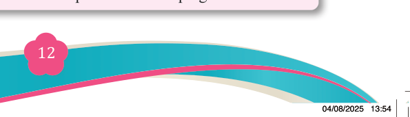
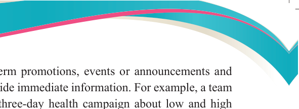
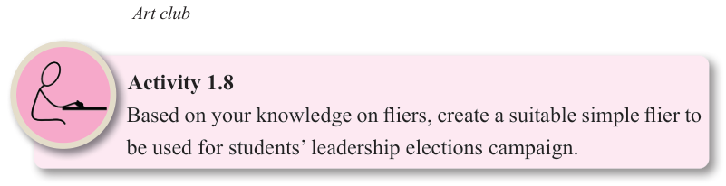

<!DOCTYPE html>
<html lang="en">

<head>
    <meta charset="utf-8" />
    <meta name="viewport" content="width=558, height=768" />
    <title>Fine Art for Secondary Schools</title>
    <meta name="title-id" content="pg018_sec001" />
    <meta name="page-section-id" content="18" />
    <link href="./content/tailwind_output.css" rel="stylesheet">
    <link href="./assets/libs/fontawesome/css/all.min.css" rel="stylesheet">
    <link href="./assets/fonts.css" rel="stylesheet">
    <link rel="preconnect" href="https://fonts.googleapis.com">
    <link rel="preconnect" href="https://fonts.gstatic.com" crossorigin>
    <link href="https://fonts.googleapis.com/css2?family=Caladea&amp;family=Tinos&amp;family=Arimo&amp;display=swap" rel="stylesheet">
    <style>
      html { width: 100%; height: 100%; background: #e5e7eb; }
      body { background: #e5e7eb; }
      #content {
        visibility: hidden;
        background: #fff;
        outline: 1px solid rgba(15, 23, 42, 0.28);
        box-shadow: 0 10px 30px rgba(15, 23, 42, 0.22);
      }
    </style>
    <noscript><style>#content { visibility: visible !important; }</style></noscript>
</head>

<body style="margin:0;overflow:hidden;width:100%;height:100%">
    <main>
      <div id="content" data-fl-reference-width="558" style="position:relative;width:558px;height:768px;margin:0 auto;overflow:hidden">
  
  
  
  
  
  
  
  
  
  
  <p data-id="pg018_p000" data-adt-raster-text="1" data-adt-reading-order="8" data-segments="[{&quot;text&quot;:&quot;Fine Art for Secondary Schools&quot;,&quot;style&quot;:{&quot;font-family&quot;:&quot;Caladea,Merriweather,serif&quot;,&quot;font-size&quot;:&quot;9px&quot;,&quot;color&quot;:&quot;#231f20&quot;}}]" data-adt-fit="1" style="position:absolute;z-index:2;top:49px;left:94px;line-height:9px;width:120px;height:9px;white-space:nowrap;opacity:0"><span style="font-family:Caladea,Merriweather,serif;font-size:9px;color:#231f20">Fine Art for Secondary Schools</span></p>
  
  <p data-id="pg018_p001" data-adt-raster-text="1" data-adt-reading-order="35" data-segments="[{&quot;text&quot;:&quot;12&quot;,&quot;style&quot;:{&quot;font-family&quot;:&quot;Caladea,Merriweather,serif&quot;,&quot;font-size&quot;:&quot;12px&quot;,&quot;color&quot;:&quot;#ffffff&quot;}}]" data-adt-fit="1" style="position:absolute;z-index:2;top:704px;left:268px;line-height:12px;width:13px;height:12px;white-space:nowrap;opacity:0"><span style="font-family:Caladea,Merriweather,serif;font-size:12px;color:#ffffff">12</span></p>
  
  <p data-id="pg018_p002" data-adt-raster-text="1" data-adt-reading-order="34" data-segments="[{&quot;text&quot;:&quot;Student&#x2019;s Book&quot;,&quot;style&quot;:{&quot;font-family&quot;:&quot;Tinos,&apos;Times New Roman&apos;,Times,Merriweather,serif&quot;,&quot;font-size&quot;:&quot;9px&quot;,&quot;color&quot;:&quot;#231f20&quot;}},{&quot;text&quot;:&quot; Form &quot;,&quot;style&quot;:{&quot;font-family&quot;:&quot;Tinos,&apos;Times New Roman&apos;,Times,Merriweather,serif&quot;,&quot;font-size&quot;:&quot;9px&quot;,&quot;color&quot;:&quot;#231f20&quot;,&quot;font-weight&quot;:&quot;bold&quot;}},{&quot;text&quot;:&quot;Two&quot;,&quot;style&quot;:{&quot;font-family&quot;:&quot;Tinos,&apos;Times New Roman&apos;,Times,Merriweather,serif&quot;,&quot;font-size&quot;:&quot;9px&quot;,&quot;color&quot;:&quot;#231f20&quot;,&quot;font-weight&quot;:&quot;bold&quot;,&quot;font-style&quot;:&quot;italic&quot;}}]" data-adt-fit="1" style="position:absolute;z-index:2;top:702px;left:94px;line-height:9px;width:97px;height:12px;white-space:nowrap;opacity:0"><span style="font-family:Tinos,&apos;Times New Roman&apos;,Times,Merriweather,serif;font-size:9px;color:#231f20">Student&#x2019;s Book</span><span style="font-family:Tinos,&apos;Times New Roman&apos;,Times,Merriweather,serif;font-size:9px;color:#231f20;font-weight:bold"> Form </span><span style="font-family:Tinos,&apos;Times New Roman&apos;,Times,Merriweather,serif;font-size:9px;color:#231f20;font-weight:bold;font-style:italic">Two</span></p>
  
  <p data-id="pg018_p003" data-adt-reading-order="9" data-segments="[{&quot;text&quot;:&quot;Fliers serve as tools for short-term promotions, events or announcements and&quot;,&quot;style&quot;:{&quot;font-family&quot;:&quot;Tinos,&apos;Times New Roman&apos;,Times,Merriweather,serif&quot;,&quot;font-size&quot;:&quot;12.002599716186523px&quot;,&quot;color&quot;:&quot;#231f20&quot;}}]" data-adt-fit="1" style="position:absolute;z-index:2;top:82px;left:86px;line-height:12.002599716186523px;width:388px;height:16px;white-space:nowrap;letter-spacing:-0.15px"><span style="font-family:Tinos,&apos;Times New Roman&apos;,Times,Merriweather,serif;font-size:12.002599716186523px;color:#231f20">Fliers serve as tools for short-term promotions, events or announcements and</span></p>
  <p data-id="pg018_p004" data-adt-reading-order="10" data-segments="[{&quot;text&quot;:&quot;they are often distributed to provide immediate information. For example, a team&quot;,&quot;style&quot;:{&quot;font-family&quot;:&quot;Tinos,&apos;Times New Roman&apos;,Times,Merriweather,serif&quot;,&quot;font-size&quot;:&quot;11.994348526000977px&quot;,&quot;color&quot;:&quot;#231f20&quot;}}]" data-adt-fit="1" style="position:absolute;z-index:2;top:98px;left:86px;line-height:12px;width:389px;height:16px;white-space:nowrap;letter-spacing:-0.15px"><span style="font-family:Tinos,&apos;Times New Roman&apos;,Times,Merriweather,serif;font-size:11.994348526000977px;color:#231f20">they are often distributed to provide immediate information. For example, a team</span></p>
  <p data-id="pg018_p005" data-adt-reading-order="11" data-segments="[{&quot;text&quot;:&quot;of health workers conducted a three-day health campaign about low and high&quot;,&quot;style&quot;:{&quot;font-family&quot;:&quot;Tinos,&apos;Times New Roman&apos;,Times,Merriweather,serif&quot;,&quot;font-size&quot;:&quot;12px&quot;,&quot;color&quot;:&quot;#231f20&quot;}}]" data-adt-fit="1" style="position:absolute;z-index:2;top:114px;left:86px;line-height:12px;width:389px;height:16px;white-space:nowrap;letter-spacing:-0.15px"><span style="font-family:Tinos,&apos;Times New Roman&apos;,Times,Merriweather,serif;font-size:12px;color:#231f20">of health workers conducted a three-day health campaign about low and high</span></p>
  
  <p data-id="pg018_p006" data-adt-reading-order="12" data-segments="[{&quot;text&quot;:&quot;blood pressure heart diseases in a village and used fliers and posters to inform the&quot;,&quot;style&quot;:{&quot;font-family&quot;:&quot;Tinos,&apos;Times New Roman&apos;,Times,Merriweather,serif&quot;,&quot;font-size&quot;:&quot;11.988594055175781px&quot;,&quot;color&quot;:&quot;#231f20&quot;}}]" data-adt-fit="1" style="position:absolute;z-index:2;top:130px;left:86px;line-height:12px;width:388px;height:16px;white-space:nowrap;letter-spacing:-0.15px"><span style="font-family:Tinos,&apos;Times New Roman&apos;,Times,Merriweather,serif;font-size:11.988594055175781px;color:#231f20">blood pressure heart diseases in a village and used fliers and posters to inform the</span></p>
  <p data-id="pg018_p007" data-adt-reading-order="13" data-segments="[{&quot;text&quot;:&quot;villagers. The posters and fliers had textural and pictorial messages that helped\n&quot;,&quot;style&quot;:{&quot;font-family&quot;:&quot;Tinos,&apos;Times New Roman&apos;,Times,Merriweather,serif&quot;,&quot;font-size&quot;:&quot;12px&quot;,&quot;color&quot;:&quot;#231f20&quot;}},{&quot;text&quot;:&quot;to illustrate what was being explained. The posters were pinned on village house\n&quot;,&quot;style&quot;:{&quot;font-family&quot;:&quot;Tinos,&apos;Times New Roman&apos;,Times,Merriweather,serif&quot;,&quot;font-size&quot;:&quot;12px&quot;,&quot;color&quot;:&quot;#231f20&quot;}},{&quot;text&quot;:&quot;walls, at the village market, the dispensary and at the school environment. The\n&quot;,&quot;style&quot;:{&quot;font-family&quot;:&quot;Tinos,&apos;Times New Roman&apos;,Times,Merriweather,serif&quot;,&quot;font-size&quot;:&quot;12px&quot;,&quot;color&quot;:&quot;#231f20&quot;}},{&quot;text&quot;:&quot;fliers were distributed to the villagers for more reading. In addition, some health&quot;,&quot;style&quot;:{&quot;font-family&quot;:&quot;Tinos,&apos;Times New Roman&apos;,Times,Merriweather,serif&quot;,&quot;font-size&quot;:&quot;12px&quot;,&quot;color&quot;:&quot;#231f20&quot;}}]" data-adt-fit="1" style="position:absolute;z-index:2;top:146px;left:86px;line-height:12px;width:389px;height:64px;white-space:pre"><span style="font-family:Tinos,&apos;Times New Roman&apos;,Times,Merriweather,serif;font-size:12px;color:#231f20">villagers. The posters and fliers had textural and pictorial messages that helped
</span><span style="font-family:Tinos,&apos;Times New Roman&apos;,Times,Merriweather,serif;font-size:12px;color:#231f20">to illustrate what was being explained. The posters were pinned on village house
</span><span style="font-family:Tinos,&apos;Times New Roman&apos;,Times,Merriweather,serif;font-size:12px;color:#231f20">walls, at the village market, the dispensary and at the school environment. The
</span><span style="font-family:Tinos,&apos;Times New Roman&apos;,Times,Merriweather,serif;font-size:12px;color:#231f20">fliers were distributed to the villagers for more reading. In addition, some health</span></p>
  
  <p data-id="pg018_p011" data-adt-reading-order="14" data-segments="[{&quot;text&quot;:&quot;workers used loudspeakers to spread messages printed on the posters and fliers.&quot;,&quot;style&quot;:{&quot;font-family&quot;:&quot;Tinos,&apos;Times New Roman&apos;,Times,Merriweather,serif&quot;,&quot;font-size&quot;:&quot;12px&quot;,&quot;color&quot;:&quot;#231f20&quot;}}]" data-adt-fit="1" style="position:absolute;z-index:2;top:210px;left:86px;line-height:12px;width:389px;height:16px;white-space:nowrap;letter-spacing:-0.15px"><span style="font-family:Tinos,&apos;Times New Roman&apos;,Times,Merriweather,serif;font-size:12px;color:#231f20">workers used loudspeakers to spread messages printed on the posters and fliers.</span></p>
  <p data-id="pg018_p012" data-adt-reading-order="15" data-segments="[{&quot;text&quot;:&quot;The illustrations and messages from the posters and fliers helped the villagers to&quot;,&quot;style&quot;:{&quot;font-family&quot;:&quot;Tinos,&apos;Times New Roman&apos;,Times,Merriweather,serif&quot;,&quot;font-size&quot;:&quot;12px&quot;,&quot;color&quot;:&quot;#231f20&quot;}}]" data-adt-fit="1" style="position:absolute;z-index:2;top:226px;left:86px;line-height:12px;width:389px;height:16px;white-space:nowrap;letter-spacing:-0.15px"><span style="font-family:Tinos,&apos;Times New Roman&apos;,Times,Merriweather,serif;font-size:12px;color:#231f20">The illustrations and messages from the posters and fliers helped the villagers to</span></p>
  <p data-id="pg018_p013" data-adt-reading-order="16" data-segments="[{&quot;text&quot;:&quot;understand the functions and importance of the heart, the source of the heart disease,&quot;,&quot;style&quot;:{&quot;font-family&quot;:&quot;Tinos,&apos;Times New Roman&apos;,Times,Merriweather,serif&quot;,&quot;font-size&quot;:&quot;11.87833309173584px&quot;,&quot;color&quot;:&quot;#231f20&quot;}}]" data-adt-fit="1" style="position:absolute;z-index:2;top:242px;left:86px;line-height:12px;width:388px;height:16px;white-space:nowrap;letter-spacing:-0.15px"><span style="font-family:Tinos,&apos;Times New Roman&apos;,Times,Merriweather,serif;font-size:11.87833309173584px;color:#231f20">understand the functions and importance of the heart, the source of the heart disease,</span></p>
  <p data-id="pg018_p014" data-adt-reading-order="17" data-segments="[{&quot;text&quot;:&quot;and the impact of either lower or high blood pressure on the human body. Since&quot;,&quot;style&quot;:{&quot;font-family&quot;:&quot;Tinos,&apos;Times New Roman&apos;,Times,Merriweather,serif&quot;,&quot;font-size&quot;:&quot;12px&quot;,&quot;color&quot;:&quot;#231f20&quot;}}]" data-adt-fit="1" style="position:absolute;z-index:2;top:258px;left:86px;line-height:12px;width:389px;height:16px;white-space:nowrap;letter-spacing:-0.15px"><span style="font-family:Tinos,&apos;Times New Roman&apos;,Times,Merriweather,serif;font-size:12px;color:#231f20">and the impact of either lower or high blood pressure on the human body. Since</span></p>
  <p data-id="pg018_p015" data-adt-reading-order="18" data-segments="[{&quot;text&quot;:&quot;the villagers understood the heart disease through illustrated images on the posters&quot;,&quot;style&quot;:{&quot;font-family&quot;:&quot;Tinos,&apos;Times New Roman&apos;,Times,Merriweather,serif&quot;,&quot;font-size&quot;:&quot;11.949894905090332px&quot;,&quot;color&quot;:&quot;#231f20&quot;}}]" data-adt-fit="1" style="position:absolute;z-index:2;top:274px;left:86px;line-height:12px;width:388px;height:16px;white-space:nowrap;letter-spacing:-0.15px"><span style="font-family:Tinos,&apos;Times New Roman&apos;,Times,Merriweather,serif;font-size:11.949894905090332px;color:#231f20">the villagers understood the heart disease through illustrated images on the posters</span></p>
  <p data-id="pg018_p016" data-adt-reading-order="19" data-segments="[{&quot;text&quot;:&quot;and fliers, that society changed some of their risky physical practices that were\n&quot;,&quot;style&quot;:{&quot;font-family&quot;:&quot;Tinos,&apos;Times New Roman&apos;,Times,Merriweather,serif&quot;,&quot;font-size&quot;:&quot;12px&quot;,&quot;color&quot;:&quot;#231f20&quot;}},{&quot;text&quot;:&quot;described by the health workers as sources of their low and high blood pressure.&quot;,&quot;style&quot;:{&quot;font-family&quot;:&quot;Tinos,&apos;Times New Roman&apos;,Times,Merriweather,serif&quot;,&quot;font-size&quot;:&quot;12px&quot;,&quot;color&quot;:&quot;#231f20&quot;}}]" data-adt-fit="1" style="position:absolute;z-index:2;top:290px;left:86px;line-height:12px;width:389px;height:35px;white-space:pre"><span style="font-family:Tinos,&apos;Times New Roman&apos;,Times,Merriweather,serif;font-size:12px;color:#231f20">and fliers, that society changed some of their risky physical practices that were
</span><span style="font-family:Tinos,&apos;Times New Roman&apos;,Times,Merriweather,serif;font-size:12px;color:#231f20">described by the health workers as sources of their low and high blood pressure.</span></p>
  <p data-id="pg018_p018" data-adt-reading-order="20" data-segments="[{&quot;text&quot;:&quot;Figure: 1.11 shows another example of flier use that invites interested villagers to&quot;,&quot;style&quot;:{&quot;font-family&quot;:&quot;Tinos,&apos;Times New Roman&apos;,Times,Merriweather,serif&quot;,&quot;font-size&quot;:&quot;11.989846229553223px&quot;,&quot;color&quot;:&quot;#231f20&quot;}}]" data-adt-fit="1" style="position:absolute;z-index:2;top:325px;left:86px;line-height:12px;width:388px;height:16px;white-space:nowrap;letter-spacing:-0.15px"><span style="font-family:Tinos,&apos;Times New Roman&apos;,Times,Merriweather,serif;font-size:11.989846229553223px;color:#231f20">Figure: 1.11 shows another example of flier use that invites interested villagers to</span></p>
  <p data-id="pg018_p019" data-adt-reading-order="21" data-segments="[{&quot;text&quot;:&quot;join the fine art club of&quot;,&quot;style&quot;:{&quot;font-family&quot;:&quot;Tinos,&apos;Times New Roman&apos;,Times,Merriweather,serif&quot;,&quot;font-size&quot;:&quot;12px&quot;,&quot;color&quot;:&quot;#231f20&quot;}},{&quot;text&quot;:&quot; &quot;,&quot;style&quot;:{&quot;font-family&quot;:&quot;Tinos,&apos;Times New Roman&apos;,Times,Merriweather,serif&quot;,&quot;font-size&quot;:&quot;12px&quot;,&quot;color&quot;:&quot;#ef4d84&quot;}},{&quot;text&quot;:&quot;Sebadi secondary school.&quot;,&quot;style&quot;:{&quot;font-family&quot;:&quot;Tinos,&apos;Times New Roman&apos;,Times,Merriweather,serif&quot;,&quot;font-size&quot;:&quot;12px&quot;,&quot;color&quot;:&quot;#231f20&quot;}}]" data-adt-fit="1" style="position:absolute;z-index:2;top:341px;left:86px;line-height:12px;width:389px;height:16px;white-space:nowrap"><span style="font-family:Tinos,&apos;Times New Roman&apos;,Times,Merriweather,serif;font-size:12px;color:#231f20">join the fine art club of</span><span style="font-family:Tinos,&apos;Times New Roman&apos;,Times,Merriweather,serif;font-size:12px;color:#ef4d84"> </span><span style="font-family:Tinos,&apos;Times New Roman&apos;,Times,Merriweather,serif;font-size:12px;color:#231f20">Sebadi secondary school.</span></p>
  
  <p data-id="pg018_p020" data-adt-reading-order="23" data-segments="[{&quot;text&quot;:&quot;Figure 1.11: \u0007&quot;,&quot;style&quot;:{&quot;font-family&quot;:&quot;Tinos,&apos;Times New Roman&apos;,Times,Merriweather,serif&quot;,&quot;font-size&quot;:&quot;10px&quot;,&quot;color&quot;:&quot;#231f20&quot;,&quot;font-weight&quot;:&quot;bold&quot;}},{&quot;text&quot;:&quot;Fliers of different sizes used to invite interested people to join the Sebadi fine&quot;,&quot;style&quot;:{&quot;font-family&quot;:&quot;Tinos,&apos;Times New Roman&apos;,Times,Merriweather,serif&quot;,&quot;font-size&quot;:&quot;10px&quot;,&quot;color&quot;:&quot;#231f20&quot;,&quot;font-style&quot;:&quot;italic&quot;}}]" data-adt-fit="1" style="position:absolute;z-index:2;top:570px;left:100px;line-height:10px;width:356px;height:16px;white-space:nowrap"><span style="font-family:Tinos,&apos;Times New Roman&apos;,Times,Merriweather,serif;font-size:10px;color:#231f20;font-weight:bold">Figure 1.11: </span><span style="font-family:Tinos,&apos;Times New Roman&apos;,Times,Merriweather,serif;font-size:10px;color:#231f20;font-style:italic">Fliers of different sizes used to invite interested people to join the Sebadi fine</span></p>
  <p data-id="pg018_p021" data-adt-reading-order="24" data-segments="[{&quot;text&quot;:&quot;Art club&quot;,&quot;style&quot;:{&quot;font-family&quot;:&quot;Tinos,&apos;Times New Roman&apos;,Times,Merriweather,serif&quot;,&quot;font-size&quot;:&quot;10px&quot;,&quot;color&quot;:&quot;#231f20&quot;,&quot;font-style&quot;:&quot;italic&quot;}}]" data-adt-fit="1" style="position:absolute;z-index:2;top:586px;left:154px;line-height:10px;width:303px;height:13px;white-space:nowrap"><span style="font-family:Tinos,&apos;Times New Roman&apos;,Times,Merriweather,serif;font-size:10px;color:#231f20;font-style:italic">Art club</span></p>
  
  <p data-id="pg018_p022" data-adt-raster-text="1" data-adt-reading-order="25" data-segments="[{&quot;text&quot;:&quot;Activity 1.8&quot;,&quot;style&quot;:{&quot;font-family&quot;:&quot;Tinos,&apos;Times New Roman&apos;,Times,Merriweather,serif&quot;,&quot;font-size&quot;:&quot;12px&quot;,&quot;color&quot;:&quot;#231f20&quot;,&quot;font-weight&quot;:&quot;bold&quot;}}]" data-adt-fit="1" style="position:absolute;z-index:2;top:623px;left:150px;line-height:12px;width:320px;height:18px;white-space:nowrap;opacity:0"><span style="font-family:Tinos,&apos;Times New Roman&apos;,Times,Merriweather,serif;font-size:12px;color:#231f20;font-weight:bold">Activity 1.8</span></p>
  <p data-id="pg018_p023" data-adt-raster-text="1" data-adt-reading-order="26" data-segments="[{&quot;text&quot;:&quot;Based on your knowledge on fliers, create a suitable simple flier to\n&quot;,&quot;style&quot;:{&quot;font-family&quot;:&quot;Tinos,&apos;Times New Roman&apos;,Times,Merriweather,serif&quot;,&quot;font-size&quot;:&quot;12px&quot;,&quot;color&quot;:&quot;#231f20&quot;}},{&quot;text&quot;:&quot;be used for students&#x2019; leadership elections campaign.&quot;,&quot;style&quot;:{&quot;font-family&quot;:&quot;Tinos,&apos;Times New Roman&apos;,Times,Merriweather,serif&quot;,&quot;font-size&quot;:&quot;12px&quot;,&quot;color&quot;:&quot;#231f20&quot;}}]" data-adt-fit="1" style="position:absolute;z-index:2;top:641px;left:150px;line-height:12px;width:320px;height:34px;white-space:pre;opacity:0"><span style="font-family:Tinos,&apos;Times New Roman&apos;,Times,Merriweather,serif;font-size:12px;color:#231f20">Based on your knowledge on fliers, create a suitable simple flier to
</span><span style="font-family:Tinos,&apos;Times New Roman&apos;,Times,Merriweather,serif;font-size:12px;color:#231f20">be used for students&#x2019; leadership elections campaign.</span></p>
  <p data-id="pg018_p026" data-adt-raster-text="1" data-adt-reading-order="37" data-segments="[{&quot;text&quot;:&quot;04/08/2025 13:54&quot;,&quot;style&quot;:{&quot;font-family&quot;:&quot;Arimo,Arial,Helvetica,Merriweather,sans-serif&quot;,&quot;font-size&quot;:&quot;6px&quot;,&quot;color&quot;:&quot;#ffffff&quot;}}]" data-adt-fit="1" style="position:absolute;z-index:2;top:746px;left:474px;line-height:6px;width:48px;height:6px;white-space:nowrap;opacity:0"><span style="font-family:Arimo,Arial,Helvetica,Merriweather,sans-serif;font-size:6px;color:#ffffff">04/08/2025 13:54</span></p>
<script src="./assets/auto-fit.js"></script>
</div>
    </main>
    <script>
      (function () {
        var c = document.getElementById("content");
        if (!c) return;
        var W = parseFloat(c.style.width) || c.offsetWidth || 1;
        var H = parseFloat(c.style.height) || c.offsetHeight || 1;
        var ref = parseFloat(c.getAttribute("data-fl-reference-width"));
        var refW = ref > 0 ? ref : W;
        var FALLBACK = 96;
        function dock() {
          var v = parseFloat(getComputedStyle(document.documentElement).getPropertyValue("--dock-height"));
          return v > 0 ? v : FALLBACK;
        }
        function fit() {
          var DOCK = dock();
          var byW = window.innerWidth / refW;
          var byH = (window.innerHeight - DOCK) / H;
          var s = Math.min(2, byW, byH > 0 ? byH : byW);
          c.style.position = "absolute";
          c.style.left = "50%";
          c.style.top = "calc((100% - " + DOCK + "px) / 2)";
          c.style.margin = "0";
          c.style.transformOrigin = "center center";
          c.style.transform = "translate(-50%, -50%) scale(" + s + ")";
          c.style.visibility = "visible";
        }
        fit();
        window.addEventListener("resize", fit);
        window.addEventListener("load", fit);
        window.addEventListener("adt:dock-resize", fit);
      })();
    </script>

    <div class="relative z-50" id="interface-container"></div>
    <div class="relative z-50" id="nav-container"></div>
    <script src="./assets/offline-preloader.js"></script>
    <script src="./assets/scorm.js"></script>
    <script src="./assets/base.bundle.local.js"></script>
</body>

</html>
